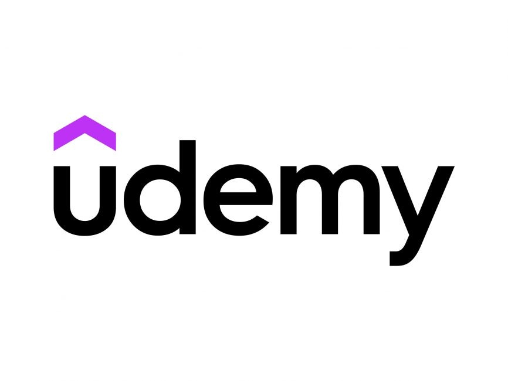

Area 01
Solutions Architecture
- Solution design
- System architecture
- Architecture diagrams
- Enterprise integrations
- Middleware
- Security & SSO
- Technical documentation
- Legacy modernization
Hello, I'm
Technology Analyst Solutions Architecture Data Engineering Product
Building technology solutions across data, architecture, AI, and digital products.
I work across technology, data, architecture, and product to turn complex business needs into practical digital solutions — from early requirements and system design through development coordination, testing, and delivery.
01 — About
I'm a technology professional focused on designing and delivering solutions that connect business needs with technical implementation. My experience spans enterprise applications, solution architecture, data engineering, analytics, AI, and product development.
I enjoy working across the full solution lifecycle — understanding requirements, designing workflows and architecture, coordinating technical teams, working with data, and helping move solutions through testing and delivery.
My background in computer science, data science, information technology, and design gives me a multidisciplinary approach: I can consider the technical architecture, data, business process, user experience, and overall product together.
Area 01
Area 02
Area 03
Area 04
02 — Experience
Building solutions across enterprise technology, data, analytics, and digital products.
03 — Projects
A selection of work across data, AI, software, architecture, and digital experiences.
Full Stack UI/UX
Problem
Cultural reference material on global food and architecture is scattered across sources and rarely designed for exploration.
What I built
An interactive web experience structured as a digital passport covering 15 countries, with custom illustration, per-country views, and a navigation model built from scratch in vanilla JavaScript.
Stack
Outcome
A self-contained, fully responsive product pairing an original visual system with a hand-built front end.
Analytics Visualization
Problem
Creators and social teams lack a consolidated view of what actually drives engagement across competing platforms.
What I built
An analytics dashboard comparing viral content trends across TikTok, Instagram, Twitter, and YouTube, with interactive charts and a visual guide to platform-specific engagement patterns.
Stack
Outcome
A single view translating cross-platform engagement data into concrete recommendations for content strategy.
Design Systems Branding
Problem
A concept retail brand needed a complete identity that stayed consistent across print, digital, packaging, and campaign work.
What I built
An end-to-end identity system: creative brief, logo suite, stationery, packaging, advertising campaign, merchandise, website mockups, animated logo, and a printed brand standards manual.
Stack
Outcome
A documented system with rules specific enough for another designer to extend the brand without direction.
04 — Certifications
AWS Cloud Quest: Cloud Practitioner — Training Badge
Amazon Web Services 2026
Google Data Analytics Professional Certificate
Coursera 2025

Oracle Cloud Infrastructure Certified Foundations Associate
Oracle 2023

Microsoft Power BI Desktop for Business Intelligence
Udemy 2023
NYUx DBMS.1: Introduction to Database Queries
New York University 2020
CS50: Introduction to Computer Science
Harvard University 2020
05 — Education
Master of Science
Data Science & Data Analytics
Bachelor of Science
Computer Science + Information Technology & Web Science Minor in Graphic Design
Association for Computing Machinery — Women in Computing
President previously Webmaster
Jan 2023 – May 2025
Led the chapter across 10+ initiatives and built partnerships with 5+ campus organizations, growing technical community and mentorship for women in computing.
ITWS Student Leadership Council
President previously Social Media Chair
Apr 2023 – Apr 2025
Served as primary liaison between students and program leadership, aligning council initiatives with program goals to improve the student experience.
Rensselaer Union
Social Media Manager
Aug 2025 – Present
Produced branding and social content for campus-wide programming, developing visual materials that kept communication consistent across channels.
06 — Contact
I'm always interested in connecting around technology, data, architecture, product, and emerging technology.
sanyaj863@gmail.comBased in the New York / New Jersey area